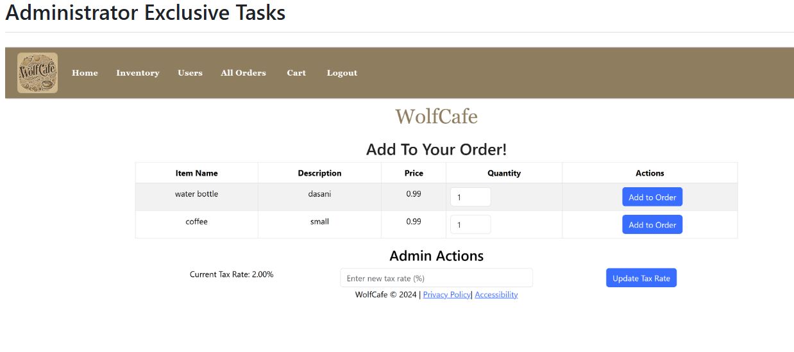
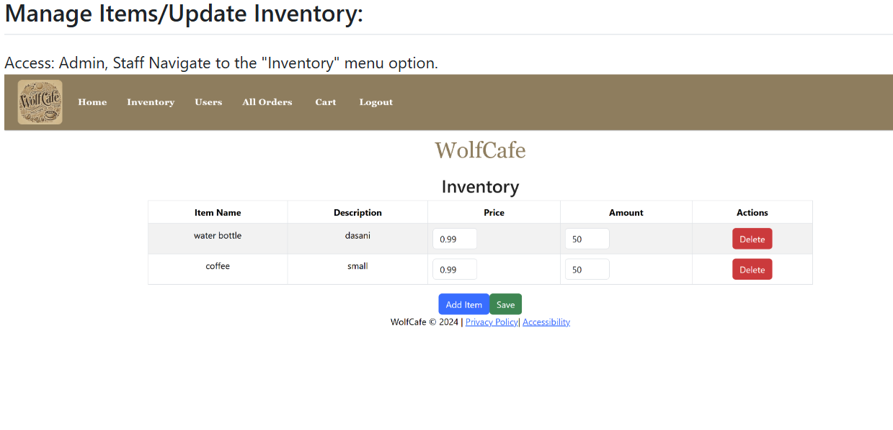
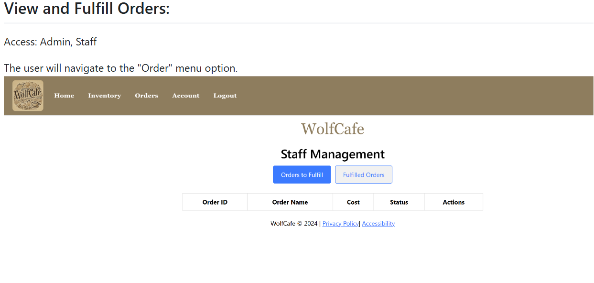

WolfCafe
A seamless platform for managing food orders, inventory, and user roles. WolfCafe offers a streamlined experience for administrators, staff, and customers alike.

Table of Contents
User Roles
- Administrator Permissions
- Staff Permissions
- Customer Permissions
- Marketer Permissions
Administrator Permissions
Full control over the system, including managing users, setting sales tax rates, managing inventory, and more.
Staff Permissions
Manage items, update inventory, and fulfill customer orders.
Customer Permissions
Make purchases, select items for orders, choose tips, and pickup completed orders.
Marketer Permissions
Change the color theme of the system.
System Tasks
- Administrator Exclusive Tasks
- Manage Users (Create/Edit/Delete)
- Set Sales Tax Rate
- Staff/Marketer Register/Log in
- Customer Register/Log in
- Modify Account Credentials
- Manage Items/Update Inventory
- Place an Order
- Add a Tip
- Checkout
- View and Fulfill Orders
- Pickup Order
- Changing the Theme of the System
- Privacy Policy
Administrator Exclusive Tasks
Manage Sales Tax Rate
Admin can modify the sales tax rate for the system, ensuring that taxes are applied correctly to all transactions.

Admin Managing Users
Manage Users (Create/Edit/Delete)
Admin can manage staff and customer users, including creating new users and editing or deleting existing ones.

Staff Homepage
Staff members can access their homepage to view and manage ongoing orders, update inventory, and fulfill customer requests.

Staff/Marketer Register/Log in
Once the admin saves a staff/marketer user to the system, the user can register with their credentials and log in to access their account.
Customer Register/Log In
Customers can register by providing their name, username, email, and password, then log in to place orders.
Modify Account Credentials (Name/Email/Password)
Users can update their credentials via the registration page, allowing them to change their name, email, or password.
Manage Items/Update Inventory
Admin and staff can manage inventory by adding, editing, or deleting items. Inventory updates are reflected in real-time.

Place an Order
Users can browse available items, add them to their order, and proceed to checkout.
Add a Tip
Users can choose a tip percentage (15%, 20%, 25%) or enter a custom value.
Checkout
Users complete their order by entering payment details and confirming the purchase.
View and Fulfill Orders
Admins and staff can view and fulfill customer orders, updating the system when an order is completed.

Pickup Order
Once an order is fulfilled, customers can pick up their order from the "Orders" section of the homepage.
Changing the Theme of the System
Marketers can update the system's theme by selecting a new background color.
Privacy Policy
Learn about how WolfCafe collects and uses user data. Users must consent to the policy before accessing the system.
Accessibility
WolfCafe ensures an inclusive user experience with features tailored to various accessibility needs.
Development Process
The development of WolfCafe followed an Agile methodology, focusing on iterative progress and frequent feedback. Key milestones included:
- Requirement Gathering and Documentation: Initial planning involved collecting requirements and documenting the project's goals, features, and technical specifications.
- Designing Wireframes, Sequence, and UML Diagrams: Wireframes were created for the user interface, and sequence and UML diagrams were developed for system architecture and data flow.
- Confirming Requirements and Assigning Tasks: The team confirmed the project requirements, broke them down into smaller tasks, and assigned them accordingly.
- Effective Project Management and Communication: Communication was streamlined through daily standups, sprint planning, and task management via project management tools.
- Frontend and Backend Development: The frontend was built using React for a responsive user interface, while Spring Boot was used for the backend services, including order processing, inventory management, and user authentication.
- Comprehensive Testing: Various testing methodologies, such as regression, beta, unit, and system tests, were conducted to ensure the application’s reliability and functionality.
- Managing GitHub Actions and Pull Requests: GitHub was used for version control, managing pull requests, and automating continuous integration tasks via GitHub Actions.
- Final Deployment: After testing, the application was deployed to production using Jenkins for continuous integration and delivery.
- Project Presentation: A final project presentation was given, demonstrating the core features and functionalities of WolfCafe to stakeholders.
Tools Used:
- Frontend: React for building a dynamic and responsive user interface.
- Backend: Spring Boot for creating robust backend services.
- Project Management: Maven for dependency management and project build.
- Database: Hibernate ORM for seamless database interaction.
- Continuous Integration: Jenkins for automating the build and deployment process.
- Version Control: GitHub for source code management and collaboration.
- API Testing: Postman for testing and validating API endpoints.